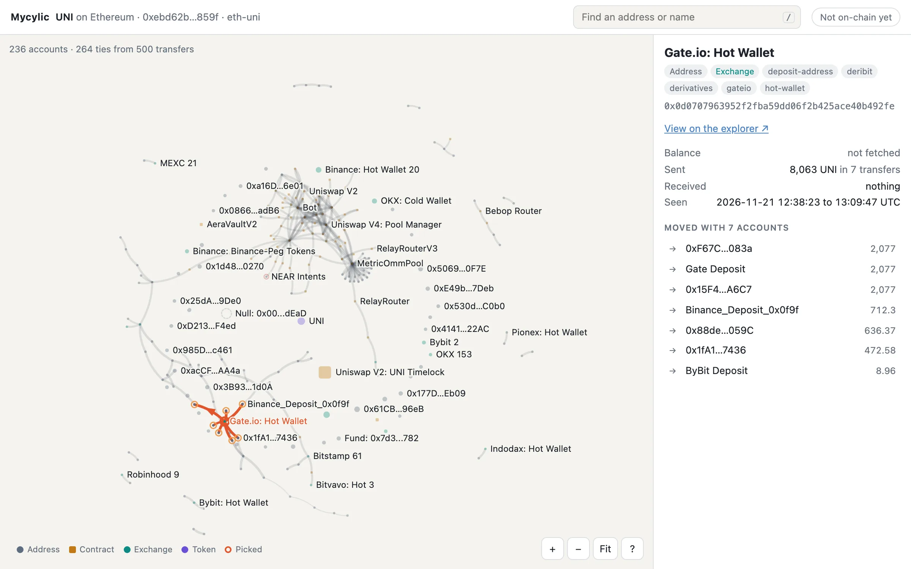

In development · token graphs first
Mycylic
Graphs you make, walk through and see, with every version on a blockchain.
Its first use is tokens. Name a token on Ethereum or Base, and Mycylic draws who holds it and where it moves, from public chain data. Then it can put that graph on a blockchain, and rebuild it from the chain alone.
Local and anonymous by default: no account, no sign-in, and it never collects who you are or what you do.
mycylic token eth 0x1f9840a85d5aF5bf1D1762F925BDADdC4201F984
UNI (Uniswap) on eth, from eth.blockscout.com
UNI on eth, 50 holders, 500 transfers · 236 nodes · 264 edges
version 0xebd62b…859f (eth-uni)
mycylic view
viewing eth-uni at http://127.0.0.1:6929/ (on this Mac only; Ctrl-C stops it)The viewer
Who holds it, and where it moves
One page, served from your own computer. A holder’s dot grows with its share of the supply, and a line thickens with what moved. Contracts are squares, exchanges are marked, and accounts an explorer flags as scams are dimmed. Click an account to fly to it and see what it sent and received, and with whom.

How it works
Name it, see it, keep it, prove it
-
Name a token
Give Mycylic a token’s address on Ethereum or Base. It reads the token, its largest holders and its latest transfers from public data: Blockscout’s open API for Ethereum, free public nodes for Base. No key, no account.
-
See it
Open the viewer in your browser. Pinch and scroll to move, click an account to fly to it, step along its transfers with the arrow keys, and go back and forward through every pick.
-
Keep every version
Each graph is saved as a version named by its hash and linked to the one before, like a commit in git. Run it again later, and the new version joins the history.
-
Put it on-chain
Publish a version to Base Sepolia, Base’s test network: the whole graph, or only its hash. Given just the transaction, Mycylic rebuilds the graph from the chain alone and checks that its hash matches.
What it graphs
Tokens first, then what connects
The name comes from mycelium, the fungus network that connects things. Tokens come first; notes, markets, an anatomy showcase and version control are planned.
- Tokens Today. Any ERC-20 token, the common kind, on Ethereum or Base: its largest holders, its latest transfers, and the exchanges and contracts in between.
- Notes Planned. An Obsidian vault as a graph of your notes. It stays private: only its hash goes on-chain.
- Markets Planned. Markets as a graph, built from public sources. It stays private: kept in an encrypted vault, with only a hash on-chain.
- Anatomy Planned. The graph of the human body from What’s that muscle?, as Mycylic’s public showcase. It isn’t in Mycylic’s format yet.
- Version control Planned for later, most likely: every change kept as a version linked to the one before.
Privacy
Local and anonymous by default
Mycylic never collects who you are or what you do. It reads public data and keeps your graphs with you.
-
On your computer
Graphs are kept in a folder where you run it, and the viewer listens only to your own machine. Nothing leaves unless you run a command that sends it.
-
No account, no tracking
No sign-in, and no telemetry now or later. A saved version holds no name, email, account id or machine name, and Mycylic never collects data on the people who use it.
-
No guessing who’s who
Names come only from what the explorer publishes: ENS names, its public name tags and verified contract names. Mycylic never ties a wallet to a person beyond that.
-
Private stays private
A chain keeps everything forever, so a graph goes on-chain whole only when all of it is already public, like a token’s holders and transfers. Private graphs go on only as a hash.
-
Clean data
Transfers of nothing, the usual tool of address poisoning, are left out of the graph and counted, and accounts an explorer flags as scams are dimmed.
-
Test network first
Mycylic publishes only to Base Sepolia, Base’s test network, where publishing costs no real money. It refuses the main network for now.
Security
Post-quantum hashing and encrypted vaults
Its security rests on hashes built to hold up against quantum computers, and vaults that keep private graphs encrypted. The bar is the NSA’s CNSA 2.0, the strictest public suite.
Post-quantum hashing
Works today
Every version is named by its SHA-512 hash, the hash the NSA’s post-quantum suite, CNSA 2.0, calls for. A quantum computer’s best known attack halves a hash’s strength, so SHA-512 keeps about 256 bits.
Encrypted vaults
Planned
Private graphs, such as your notes, will be kept encrypted on your computer with AES-256, under a key held in your Mac’s Keychain and never beside the data. Only a hash ever goes on-chain.
A key that stays put
Works today
Its signing key is made on your computer, readable only by you and never printed, and it signs for the test network alone. Mycylic never asks for a seed phrase.
Where it stands
Built and tested, one step from its first graph on-chain
Works today, in testing
Graphing a token on Ethereum or Base from public data, the viewer, versions named by SHA-512 and linked like commits, and publishing and rebuilding against a stand-in for the chain. UNI and Base’s AERO have been graphed live, and the viewer is checked at desktop and phone sizes.
Next
The first publish on Base Sepolia, then rebuilding it from the chain alone.
Planned
Base itself, the main network. Encrypted vaults for private graphs, shared between your devices under post-quantum locks. An Obsidian vault of notes as a graph, anchored by its hash only. Markets as a graph, private in the same way. Then version control.
Questions
What people ask first
- Does Mycylic have its own coin?
- No. Mycylic has no coin, token or NFT of its own. It graphs tokens that already exist, from public data.
- Does it know who I am?
- No. There is no account, no sign-in and no telemetry, and your graphs stay in a folder on your computer until you publish one.
- Which blockchain does it use?
- Base Sepolia, Base’s test network, for now, so publishing costs no real money. Base itself, the main network, is planned.
- Can it graph any token?
- Any ERC-20 token on Ethereum or Base, by its contract address. Ethereum’s data comes from Blockscout, with the names it publishes; Base’s comes from free public nodes, where every account shows as a short address.
- Is it safe from quantum computers?
- Its version names are: SHA-512 keeps about 256 bits of strength even against a quantum computer. The chain’s own signatures aren’t quantum-safe, so what Mycylic puts on-chain is public already or only a hash, never a secret.
- What will it cost?
- The price isn’t set yet. People who try it early help shape it.
More from CLI ’n’ Amen co.
-
Open source · version 1.0
Irie
The app our agents run in: every AI coding agent you have, side by side in one calm view. Free, for Mac and Linux.
-
In development
Canopy
One checkout on a vendor’s phone for every way a customer pays, and one ledger at closing. For market stalls and food trucks.
-
In early development
A social media tool
Plan, draft and post to every channel from one place, and nothing goes out until you say yes.
Want to try Mycylic early?
Tell us which token you’d graph first. We reply within one business day.